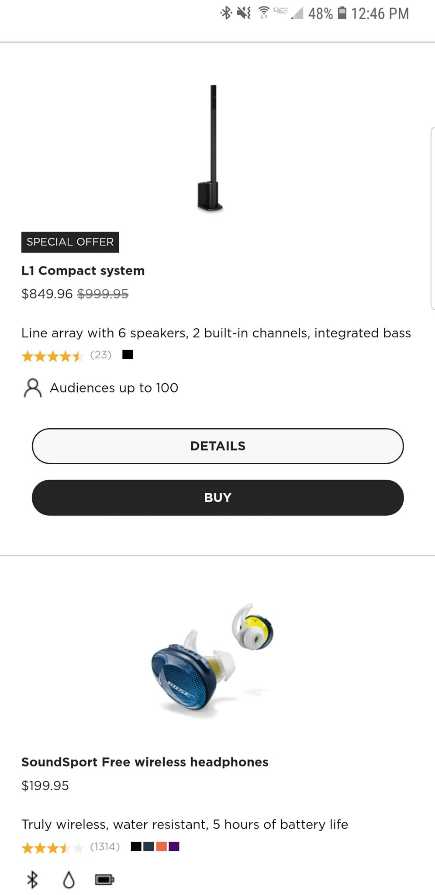
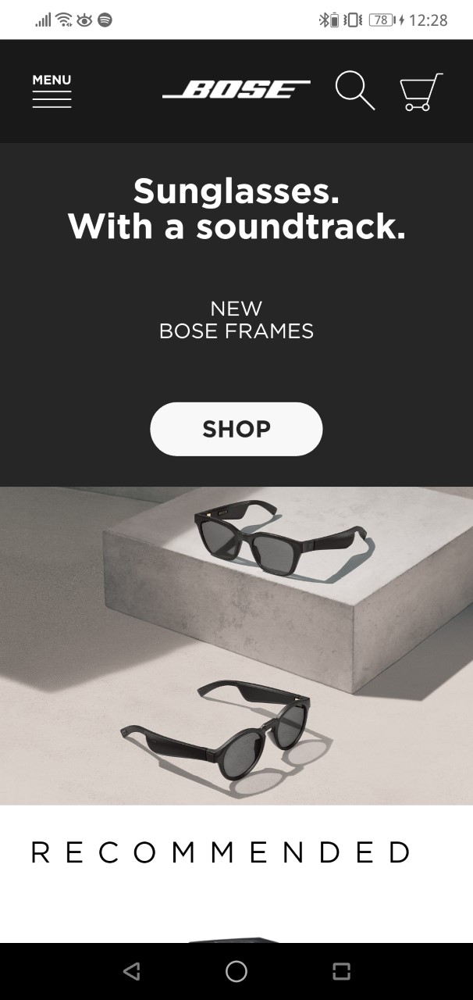

Design - Analysis Assessment
Bose Corporation
Design Principles
Proximity — James Clark

The bose.com website presents a good since of the design principle proximity by grouping key bits of information together and isolating other elements. Elements, such as the information text and links have also been grouped or isolated by color. Grouping allows individual elements to be seen as one collective body which leads and draws the eye. The isolation of the Bose logo, however, causes it to stand out from the rest of the information to give it significance.
Alignment — Jose Aquino

In this website you can see a combination of centered and left alignment. Centered alignment helps the reader to visualize easily very short paragraphs and pictures of the products in the website. Moreover, left side alignment helps the user to understand better what are some of the characteristics and prices of each item becuase of their wider message.
Repetition — Jose Aquino
You can see a lot of repetition of colors and sizes in this website. Through colors, Bose always use the colors black and white in their websites, logo, advertisements, etc. When you navigate on their page you can easily tell that it comes from Bose because of the repetition they used in their colors. Also, the separation of each product is the same, which helps the viewer to see a lot of different options of the items Bose is offering.
Contrast — Chase Bush

This website has chosen a nice black and white color scheme and used the contrast between the two colors to their advantage. In this screenshot, the white text stands out well against the black. The "shop" button stands out well and is very noticeable even though it's not super large, which is what they want for a shop button.
Typography — Rambal Kendrikc

Site Purpose Statement
The words in this website are simple and bold, catching the attention of the user. The font in presenting the product makes the website look crisp and clean. The Bose logo font gives a more sporty look to the website, also showing a more professional design. The designers of the website were attempting to make the website minimalistic and simple. The white color of the text over the dark background makes it easy for the user to read a the thin black text over the white background does the same.
Target Audience
- Age: 18-35
- Occupation: Students, Office workers, Travelers, Home owners.
- Income:$25,000 - $55,000
- Other: Person who wants quality sound devices
Persona
- Name: Walter Smith
- Occupation: Lead Consultant on IBM Team
- Primary Device: Quality Headphones
- Quote: Walter’s travel can be stressful and feels that quality sound headphones are necessary to separate himself from the environment around him during his downtime.